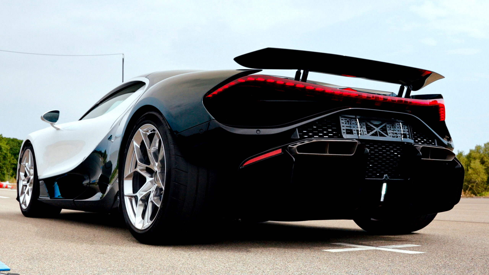

for DC Advanced UX Team.Vivi · Yohan · Libby · Lim Jisu · Katey · Anna
Back Issue

Interaction
Bugatti tunes its V16 to sound dirty
Bugatti spent three years and thousands of simulations making the Tourbillon's V16 sound 'a little bit dirty and raw' — no speakers, just intake and exhaust sculpted so drivers hear every rev change, inside a 72 dB legal cap. Sound treated as a designed interface, and as brand identity you can't fake.
부가티는 3년과 수천 번의 시뮬레이션을 들여 투르비용 V16의 사운드를 '조금 지저분하고 거칠게' 유지했다. 스피커 없이 흡배기만으로 회전수 변화가 그대로 들리게 하면서 72dB 규제까지 통과. 사운드를 설계된 인터페이스이자, 흉내 낼 수 없는 브랜드 아이덴티티로 다룬 사례.
Scout previews its Traveler in two moods: Mountainside, with semi-aniline leather in grey plaid, recycled walnut and houndstooth; and Trail-Ready, wrapping the cabin in brick-red leather and denim textiles under a canvas top. Interior CMF doing the storytelling that badges used to do.
At IFA 2026, Plaud's One earbuds transcribe your meetings, then hand the transcript to AI that drafts the follow-up emails and slide decks for you. The interface ambition is stark: capture at the ear, output at the deliverable — with every step in between automated away.
在 IFA 2026 上，Plaud One 耳机先转写你的会议，再交给 AI 直接起草后续邮件和幻灯片。它的界面野心很直白：入口在耳朵，出口在交付物——中间所有步骤都被自动化抹平。
IFA 2026에서 플라우드 원 이어버드는 회의를 전사한 뒤 AI가 후속 이메일과 슬라이드 초안까지 만들어준다. 인터페이스의 야심이 노골적이다 — 입력은 귀에서, 출력은 산출물로. 그 사이 모든 단계는 자동화로 지워진다.
Kia's next Sportage has shed its disguise, trading curves for a boxier stance with cues from the Telluride and even Range Rover Sport. Another mainstream nameplate joining the industry-wide retreat from blobby aero forms toward upright, confident geometry.
Lenovo's IFA concept hides a rollable display that grows the screen from 14 to 17 inches on demand. Beyond the party trick, it poses a real UI question: what should an interface do when the canvas itself becomes elastic?
联想的 IFA 概念机藏着一块卷轴屏，可按需从 14 英寸展开到 17 英寸。抛开炫技，它提出了一个真实的 UI 问题：当画布本身可以伸缩，界面应该如何响应？
레노버의 IFA 콘셉트 노트북은 롤러블 디스플레이를 숨겨 화면을 14인치에서 17인치로 늘린다. 눈요기 너머의 진짜 UI 질문 — 캔버스 자체가 신축적이 될 때 인터페이스는 무엇을 해야 하는가.
MMCA Seoul opens a 500-work retrospective of Do Ho Suh, whose translucent fabric houses turn relocation and memory into walk-through architecture. For anyone designing spaces or interfaces about 'belonging', the essential show of the season — and it's in Seoul.
Steven Heller remembers Ron Cobb, the acerbic '60s underground cartoonist who skewered war and ecological ruin — then became the designer behind the hardware of Alien and Star Wars. One career, proof that editorial bite and world-building craft are the same muscle.
史蒂文·海勒回顾 Ron Cobb：60 年代言辞尖刻的地下漫画家，讽刺战争与生态毁灭，后来成为《异形》《星球大战》硬件世界的设计师。一段职业生涯证明：评论的锋利与世界观营造的手艺，是同一块肌肉。
스티븐 헬러가 론 콥을 회고한다. 전쟁과 생태 파괴를 찌르던 60년대 언더그라운드 만화가는 훗날 '에이리언'과 '스타워즈'의 하드웨어를 그린 디자이너가 됐다. 비평의 날카로움과 세계관 구축의 장인정신이 같은 근육임을 증명한 경력.
Filmmaker Will Norman remade The Odyssey by strapping a £15 vintage iMac to a 25-foot crane — and the improvised rig went viral. In the year of AI video, a reminder that constraint plus wit still out-charms compute.
电影人 Will Norman 把一台 15 英镑的老 iMac 绑上 25 英尺的摇臂重拍《奥德赛》，这套土法装置一夜爆红。在 AI 视频之年，它提醒我们：约束加机智，依然比算力更迷人。
필름메이커 윌 노먼은 15파운드짜리 빈티지 아이맥을 7.6m 크레인에 묶어 '오디세이'를 다시 찍었고, 이 즉흥 장비는 바이럴이 됐다. AI 비디오의 해에 — 제약과 재치가 여전히 연산력보다 매력적이라는 증명.
Pokémon Sleep and NOT A HOTEL built a human-sized Poké Ball in Hokkaido — a habitable sphere offering a handful of overnight stays. IP translated not into merchandise but into architecture: the fantasy object at 1:1, and you're the one being caught.
Pokémon Sleep 与 NOT A HOTEL 在北海道造了一颗真人尺寸的精灵球——可居住的球体，只开放极少量过夜名额。IP 没有变成周边，而是变成建筑：幻想物件被做成 1:1，被收服的成了你。
포켓몬 슬립과 NOT A HOTEL이 홋카이도에 사람 크기의 몬스터볼을 지었다. 숙박 가능한 구체, 극소수 오버나이트만 오픈. IP가 굿즈가 아니라 건축으로 번역됐다 — 판타지 오브젝트가 1:1이 되고, 잡히는 쪽은 당신이다.
'It simply fills my life and saves me' — illustrator Varya Yakovleva on the sketchbooks whose spontaneous ink drawings grew into paintings and wooden sculptures. A portrait of the sketchbook as engine room, not warm-up act.
Tokyo's parking mandates force architects to carve car storage into even the tiniest houses — so the vehicle 'keeps a major piece of the section'. designboom surveys the ingenious spatial gymnastics that follow when regulation, not taste, drives the plan.
Motorola quilts its Razr in fabric and sets 35 hand-placed Swarovski crystals into it — including a 32-facet stone right on the hinge, the phone's most mechanical moment. Jewelry logic applied to consumer electronics, celebrating the mechanism instead of hiding it.
A new book documents the improvised dwellings of Northern California's 1960s–70s back-to-the-land communes — homes built outside every convention, photographed today alongside their builders' oral histories. Vernacular design as ideology made habitable.
The Bristol Fighter is back: a 600 hp V10 GT with gullwing doors, revived for exactly five customers. Less a car programme than a limited-edition object study — how a dormant marque distills its whole identity into a handful of hand-built artifacts.
Vention's new power bank swaps the spec-sheet aesthetic for a soft sunset gradient — a commodity category suddenly styled like a desk object you'd choose to display. Small proof that even the most generic hardware is a branding surface.
MAD Architects will convert Rotterdam's 1923 art deco warehouse into a House for Dance — studios, stages and a rooftop venue where professionals and amateurs share the same floors. Adaptive reuse aimed at bodies in motion rather than objects on display.